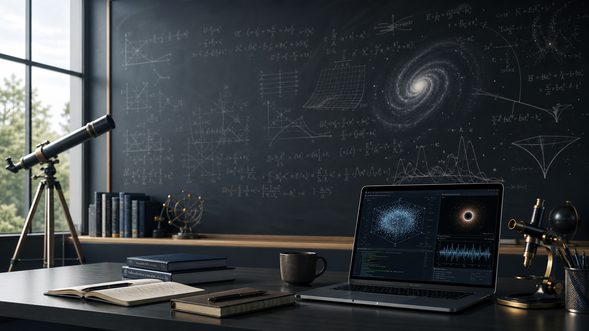

Astrophysics and Classification
Computational approaches to photometric supernova classification, model evaluation, and transparent scientific workflows.

Physics Education · Astrophysics · Scientific Computing
Physics educator and independent researcher working across astrophysics, machine learning, physics education research, and open science.
About
An educator-researcher portfolio spanning classroom practice, astronomy learning, machine learning for supernova classification, and reproducible computational methods.
Research Areas
The portfolio is organized around research themes that can expand into dedicated pages for papers, datasets, simulations, notebooks, and classroom material.
Computational approaches to photometric supernova classification, model evaluation, and transparent scientific workflows.
Studies of astronomy misconceptions, pre-post assessment, multimedia interventions, and evidence-informed teaching design.
Open notebooks, simulations, reproducible pipelines, and practical tools that connect classroom questions with research methods.
Featured Projects
These featured entries provide a clear starting point for future case studies, supporting files, code releases, and publication links.
Improving photometric supernova classification workflows through feature engineering, model comparison, optimization, and reproducibility.
Investigating student misconceptions in astronomy with diagnostic assessment, pre-post analysis, and multimedia learning interventions.
Browser-based simulations and lab activities designed to make mechanics, waves, astronomy, and data analysis more observable for learners.
Learning resources can grow here into lesson collections, demonstration notes, simulation guides, classroom studies, and assessment instruments.
Explanations and activities focused on the physics behind the formulas.
Diagnostic questions, pre-post analysis, and misconception-aware instruction.
Simulations, notebooks, and datasets that help students reason with models.
Materials designed for future expansion into downloadable teaching collections.
Publications and Profiles
Add journal articles, preprints, DOI records, Zenodo releases, datasets, and repository links here as the portfolio grows.
Open Science
Future sections can present notebooks, data dictionaries, reproducible environments, classroom resources, talks, and project documentation.